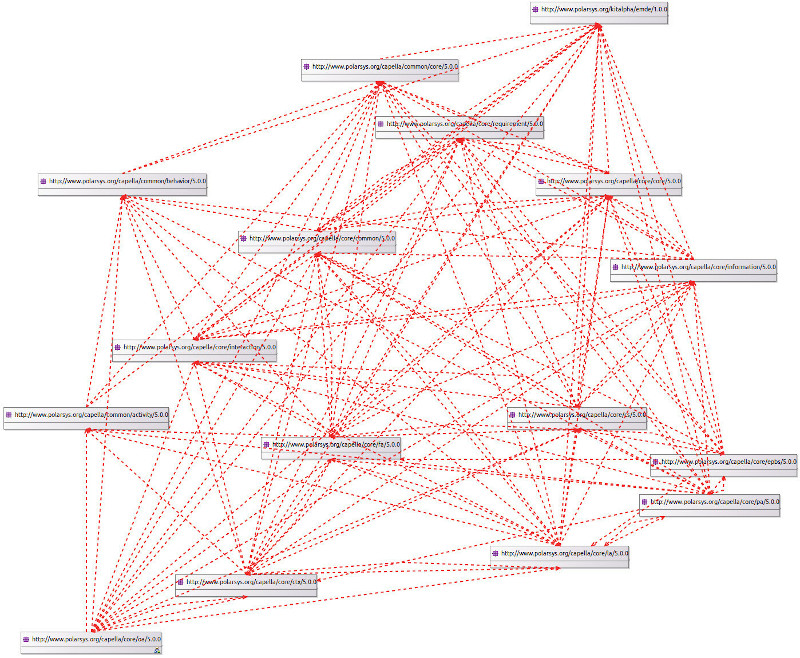

How to explore Capella meta-model#
Initially the API design was mostly based on our understanding of XML files, however we soon moved on into exploring the Capella meta-model. Here is a short summary of how we do it.
Getting the meta-model sources#
First of all we need to get the data - the most straight-forward way is to clone the Capella source code:
mkdir capella-mm && cd capella-mm
git clone https://github.com/eclipse/capella.git
As there are quite a few files we may want to discover the packages of interest
using find:
find -name '*.ecore' -o -name '*.genmodel'lists all the ECore models and Generation files and adds Generation viewpoint for related ecorefind -name '*.odesign'lists all the Sirius definitions (if you like to see how the diagram look-and-feel is defined)
You could open all the related projects right where they are but I’d prefer to have a clean sandbox.
mkdir capella-metamodel
cp -r capella/common/plugins/org.polarsys.capella.common.data.activity.gen capella-metamodel
cp -r capella/common/plugins/org.polarsys.capella.common.data.behavior.gen capella-metamodel
cp -r capella/common/plugins/org.polarsys.capella.common.data.core.gen capella-metamodel
cp -r capella/common/plugins/org.polarsys.capella.common.libraries.gen capella-metamodel
cp -r capella/common/plugins/org.polarsys.capella.common.re.gen capella-metamodel
cp -r capella/core/plugins/org.polarsys.capella.core.data.gen capella-metamodel
cp -r capella/releng/cdo/plugins/org.polarsys.kitalpha.emde.model.cdo capella-metamodel
cp -r capella/tests/plugins/org.polarsys.capella.test.diagram.layout.ju capella-metamodel
Now we have all of the meta-model dependencies in one place and can open it as a single Eclipse project. You could open those with any Eclipse that has EMF (like the Modeling bundle) but I’d advise using Capella Studio (open the link and search for “Studio”) for the best experience - it is provisioned with all the extras that help you visualize / review the meta-model.

After import Eclipse may highlight some projects with error or warning sign - that’s fine, we’ll let it go for now.
Before we dive into visualizations, let’s have a quick look around. The core of
Capella metamodel is provided by org.polarsys.capella.common.data.core.gen
project. There you’ll find the definitions of the “Capella Layers” and the
enabling “EnginereengConcerns” components. For example, the SystemAnalysis
is provided by ContextArchitecture.ecore.

Even though the default tree-view (triggered by double-click on a .core) is
already giving us something there are much better ways to review the models.
We’ll talk about that in the Visualizing ECores chapter. But first we
should have a look into the package structure and interdependencies.
Quick intro to package structure#
If you are unfamiliar with ECore you might be wondering what are those ECore files anyways. We could say that they act as UML Packages. Every package contains ontology elements (or UML Classes) and “local” element relationships (Associations). The packages depend on each-other as elements frequently build on top of each-other via Generalization relationship. Thats one of the best things about Capella metamodel - it is defined by UML (or well, structural subset, but still pretty cool)!
So, from using Capella we know our model layers - Operational Analysis, System Analysis, Logical Architecture, Physical Architecture and EPBS. We can locate the corresponding ECores pretty quick, but what are all the other packages about? To answer that question we should visualize the package dependency - the quickest way to do so is to create a new representation file. And after that follow the steps in create package dependency overview. The result may look like what we have below:
And even though there are not too many packages in the meta-model, when we visualize the inter-package dependency it may be a bit difficult to understand. By the way, the figure above is also available in SVG - you can open it in a new tab and zoom-in if you like or scroll down for a simplified one (but opinionated).
{kind=link}
It almost feels like everything depends on everything but that isn’t true really. We could change perspective and look for the dependencies of an end-user exposed package, such as Operational Analysis (oa). I’ll use Papyrus to visualize that:
When we add all the Capella layers to that picture things get a bit more
interesting. I added some artificial grouping on top of the existing packages
that will help us later on - the artificial groups are: CapellaLayers -
packages that cover the layers we used to see in the tool; CrossLayer -
packages that define ontology and patterns that we see in almost every layer;
Enablers - the low level ontology that enables every element.
To make a further point on CrossLayer, lets have a closer look at a
Function. We know that Functions are quite similar in how they look and feel
across Capella layers and have a lot in common with OperationalActivity. When
we open LogicalArchitecture.ecore we see it defines a LogicalFunction
as a specialization of AbstractFunction that comes from
FunctionalAnalysis.ecore. There is a very nice feature provided by the
Ecore Tools (that is also included in Capella Studio) - Class Inheritance
view (there is also a tiny how-to use it below). We’ll use that to
visualize the way the functions are made.

Just to be on a safe side I’ve done the above exercise for
OperationalActivity, SystemFunction, LogicalFunction and
PhysicalFunction - the inheritance tree is exactly the same. I’ve done this
check for a few other familiar ontology elements and got same result. I think
this gives a feeling for what the CrossLayer is about - to me that’s the
place where most of the magic happens. And this is how the relationship between
the CapellaLayers and CrossLayer looks like when we de-noise it a bit:
It’s been a lengthy chain of thought and to finish on a hopefully useful visualization - lets have a look at the Class contexts of some things that we use most frequently
Visualizations of some frequently used ontology elements#
Below you’ll find some quick visualizations for frequently used ontology elements, grouped by CrossLayer package
Functional Analysis#


State Machines#

The figure above is somewhat a “treasure map” to everything related to state machines. It is made in a semi-automatic way with the help of ECore Tools and ELK
Composite Structure#


You may also want to have a look at the Block context below as it defines some other useful things that a Component (or LogicalComponent) can do.


Appendix: Visualizing ECores#
If you are new to CapellaStudio and Ecore, here are some practical hints for how to get stuff done, ignore the below otherwise:
Create new representations file#
To start playing with visualizations we need a new representations file (.aird). It is pretty easy to get there but just in case, there is figure below to guide you through that.
Package dependency overview#
To create a package dependency overview for all packages you may follow the guidance in the figure below:

Visualizing class inheritance#
There is a very nice feature that allows given a class to show all of its super-classes (generalizations) and specializations. The figure below gives you some hints for how to use it: